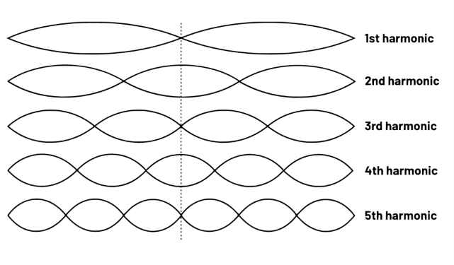
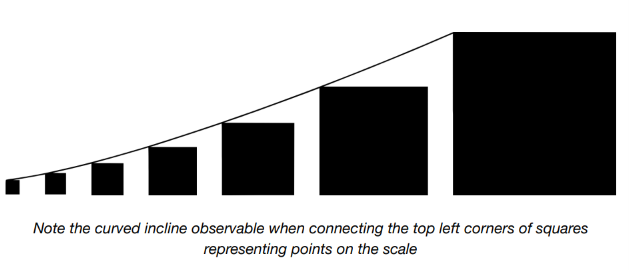

Escala modular¶
La música es fundamentalmente una exposición matemática, y cuando hablamos de la musicalidad de la tipografía ↗ es porque la composición tipográfica y la música comparten una base matemática.
Estamos seguros de que habrás oído hablar de conceptos como frecuencia, tono y armonía. Todos estos son matemáticamente determinables, pero ¿sabías que el tono percibido puede estar formado por múltiples frecuencias?
Una sola nota musical, como la producida al pulsar una cuerda de guitarra, es en sí misma una composición. Las diferentes frecuencias (o armónicos) juntos pertenecen a una serie armónica. Una serie armónica es una secuencia de fracciones basada en la serie aritmética de incremento en 1.

El sonido resultante es armonioso debido a su regularidad. La frecuencia fundamental es divisible por cada una de las frecuencias armónicas, y cada frecuencia armónica es la media de las frecuencias a cada lado de ella.
Armonía visual¶
Deberíamos aspirar a la armonía también en nuestro layout visual. Como el sonido de una cuerda pulsada, debería ser cohesivo. Dado que trabajamos predominantemente con texto, es sensato tratar el line-height como base para extrapolar valores para el espacio en blanco. Un font-size de 1rem (implícitamente), y un line-height de 1.5 crea un valor por defecto de 1.5rem. Un espacio armoniosamente más grande podría ser 3rem (2 × 1.5) o 4.5rem (3 × 1.5).
Crear una secuencia sumando 1.5 en cada paso resulta en intervalos grandes. En su lugar, podemos multiplicar por 1.5. El resultado sigue siendo regular; los incrementos solo más pequeños.
Este algoritmo se llama escala modular, y al igual que una escala musical está destinada a producir armonía. Cómo la emplees en tu diseño depende de la tecnología que estés usando.
Propiedades personalizadas (custom properties)¶
En CSS, puedes describir una escala modular usando custom properties y la función calc(), que soporta aritmética simple. En el siguiente ejemplo, dividimos o multiplicamos por la propiedad personalizada (variable) --ratio para crear los puntos en nuestra escala. Podemos hacer uso de puntos ya establecidos para generar nuevos. Es decir, var(--s2) * var(--ratio) es equivalente a var(--ratio) * var(--ratio) * var(--ratio).

La función pow()¶
Al momento de escribir esto, los navegadores solo soportan aritmética básica en operaciones calc(). Sin embargo, un nuevo conjunto de funciones matemáticas/expresiones ↗ están llegando a CSS. Crucialmente, esto incluye la función pow(), con la cual acceder y crear puntos de escala modular se vuelve mucho más fácil.
Acceso desde JavaScript¶
Nuestras variables de escala se colocan en el elemento :root, haciéndolas globalmente disponibles. Y por global, queremos decir verdaderamente global. Las custom properties están disponibles para JavaScript y también "atraviesan" los límites de Shadow DOM para afectar el CSS de una hoja de estilo shadowRoot.
JavaScript consume las custom properties de CSS como propiedades JSON. Puedes pensar en las custom properties globales como configuraciones compartidas por CSS y JavaScript. Así es como obtendrías el punto --s3 en la escala usando JavaScript (document.documentElement representa el elemento :root o <html>):
const rootStyles = getComputedStyle(document.documentElement);
const scale3 = rootStyles.getPropertyValue('--s3');
Soporte de Shadow DOM¶
La misma propiedad --s3 se aplica exitosamente cuando se invoca en Shadow DOM, como en el siguiente ejemplo. El selector :host se refiere al propio custom element hipotético.
Pasando mediante props¶
A veces podríamos querer que nuestro custom element consuma ciertos estilos desde propiedades (props) — en este caso una prop padding.
La cadena var(--s3) puede ser interpolada en el CSS de la instancia del custom element usando un template literal ↗:
Pero primero necesitamos escribir un getter y un setter para nuestra prop. El sufijo || 'var(--s1)' en la línea del getter es el valor de retorno por defecto. El uso de valores por defecto sensatos hace que trabajar con componentes de layout sea menos laborioso; apuntamos a convención sobre configuración ↗.
get padding() {
return this.getAttribute('padding') || 'var(--s1)';
}
set padding(val) {
return this.setAttribute('padding', val);
}
⚠ Evitando Shadow DOM¶
Los custom elements utilizados para implementar los layouts de Every Layout no usan Shadow DOM porque están diseñados para aprovechar más plenamente los estilos 'globales'. Consulta Global and local styling para más información.
No usar Shadow DOM también facilita el renderizado del lado del servidor de los estilos incrustados. El estilo de cualquier layout inicial de Every Layout se incrusta en el documento como parte del proceso de construcción, lo que significa que los custom elements no dependen de JavaScript, excepto para el procesamiento dinámico de sus valores en herramientas de desarrollo, o a través de tu propio scripting personalizado.
Imponiendo consistencia¶
Esta prop padding es actualmente permisiva; el autor puede proporcionar una custom property, o un valor de longitud simple como 1.25rem. Si quisiéramos imponer el uso de nuestra escala modular, aceptaríamos solo números (2, 3, -1) y los interpolaríamos así: var(--${this.padding}).
Podríamos verificar que se está pasando un valor numérico usando isNaN(). El doble "!!" es porque primero debemos realizar type coercion ↗, convirtiendo un potencial "1" o "2" en 1 o 2.
if (!!isNaN(this.padding)) {
console.error('<my-component> el valor de padding debe ser un número que represente un punto en la escala modular');
return;
}
La escala modular se basa en un único número, en este caso 1.5. A través de la extrapolación — como multiplicador y divisor — la presencia del número se puede sentir en todo el diseño visual. El diseño consistente y equilibrado se siembra a partir de axiomas simples como la relación de la escala modular.
Algunos creen que la relación específica utilizada para la escala modular es importante, y muchos se adhieren a la proporción áurea ↗ de 1.61803398875. Pero es en la adherencia estricta a la relación que elijas donde se crea la armonía.